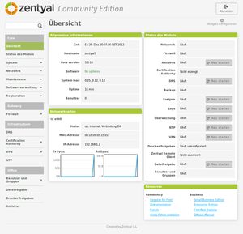
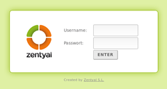
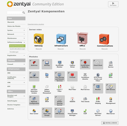

Zentyal
Dieser Artikel wurde für die folgenden Ubuntu-Versionen getestet:
Ubuntu 14.04 Trusty Tahr
Artikel für fortgeschrittene Anwender
Dieser Artikel erfordert mehr Erfahrung im Umgang mit Linux und ist daher nur für fortgeschrittene Benutzer gedacht.
Zum Verständnis dieses Artikels sind folgende Seiten hilfreich:
Einrichtung eines Software-RAIDs, optional
Verwaltung mehrerer Festplatten mit LVM, optional
Zentyal  ist eine in Spanien entwickelte grafische Oberfläche für die Server-Version von Ubuntu 12.04. Dadurch wird die oft mühsame und zeitraubende manuelle Installation und Konfiguration eines eigenen Servers erheblich vereinfacht. Die spätere Administration des Servers erfolgt komfortabel und verschlüsselt über eine integrierte Weboberfläche. Zu den Zielgruppen zählen neben dem Heimbereich sowohl gewerbliche oder freiberufliche Nutzer (SoHo) als auch kleine und mittlere Unternehmen (KMU). Bei Bedarf ist kommerzieller Support durch die Entwicklerfirma verfügbar.
ist eine in Spanien entwickelte grafische Oberfläche für die Server-Version von Ubuntu 12.04. Dadurch wird die oft mühsame und zeitraubende manuelle Installation und Konfiguration eines eigenen Servers erheblich vereinfacht. Die spätere Administration des Servers erfolgt komfortabel und verschlüsselt über eine integrierte Weboberfläche. Zu den Zielgruppen zählen neben dem Heimbereich sowohl gewerbliche oder freiberufliche Nutzer (SoHo) als auch kleine und mittlere Unternehmen (KMU). Bei Bedarf ist kommerzieller Support durch die Entwicklerfirma verfügbar.
Server-Funktionen (Rolle des Servers):
Gateway: Firewall, Proxy, VPN, Intrusion Detection, Bandbreitenbeschränkungen etc.
Infrastructure: Domainkonfiguration, Zertifikatsverwaltung (CA) etc.
Office: Datei-, Druckserver, Freigaben, Antivirus, etc.
Communications: Exchange-Ersatz, Asterisk etc.
oder eine beliebige Kombination aus diesen Möglichkeiten
Alle verwendeten Programme stammen unverändert aus den offiziellen Paketquellen, die Weboberfläche und die Vorkonfiguration der diversen Serverdienste dagegen aus eigener Entwicklung. Alternativen für einen Homeserver sind beispielsweise OpenMediaVault, SME, clearOS (ehemals ClarkConnect) oder IPFire.
Hinweis:
Dieser Artikel ist auf Basis der Community-Version 3.0 entstanden. Diese wurde mit Version 4.0 in "Zentyal Server Development Version" umbenannt. Ab Version 3.4 wurde die konzeptionelle Ausrichtung entscheidend geändert (siehe Versionstabelle). Gegenwärtig wird Zentyal vor allem als Ersatz für Microsoft Windows Server vermarktet, während frühere Versionen durch ihre Vielfalt an unterschiedlichsten Server-Diensten überzeugen konnten.
Geschichte¶
Zentyal wird bereits seit längerer Zeit entwickelt. Nachfolgend ein kurzer Überblick. Reine Entwicklerversionen (z.B. 2.3) wurden der Einfachheit halber weggelassen.
| Stabile Zentyal-Versionen | ||
| Version | Veröffentlichung | Anmerkungen |
| 5.0 | November 2016 | Ubuntu 16.04 LTS als Basis; Samba 4.5.1; systemd statt Upstart; SOGo Webmail 3.2.1 (siehe auch Major new Linux Small Business Server release und Small Business Server auf Linux-Basis  ) ) |
| 4.2 | Oktober 2015 | Ubuntu 14.04.3 LTS als Basis; Samba 4.3.1, die Outlook-Kompabilität wurde weiterausgebaut (siehe auch Release notes ) |
| 4.1 | März 2015 | Ubuntu 14.04.2 LTS als Basis; u.a. verbesserte Unterstützung für Microsoft Outlook 2013 (siehe auch Release notes ) |
| 4.0 | Oktober 2014 | Zweite Version auf Basis von Ubuntu 14.04 LTS; nur noch für 64-bit-Systeme; komplette Neuausrichtung mit dem Schwerpunkt E-Mail und verwandte Dienste: integrierte Unterstützung für Microsoft Outlook 2007 und 2010; erstmaliger Support von Outlook 2013; L2TP-Modul erneuert und verbessert; entfallene Module: IPS, USV-Management, Backup, Monitor, RADIUS, Webserver, Roundcube Webmail (ersetzt durch SOGo Webmail) und IPsec (ersetzt durch ein neues Modul, dass nur L2TP unterstützt). |
| 3.5 | Juli 2014 | Erste Version auf Basis von Ubuntu 14.04 LTS; die Module L7 Filter, FTP, Zarafa, User Corner, Captive Portal und Bandwidth Monitor sind nicht mehr enthalten; keine Synchronisation mit OpenLDAP mehr. |
| 3.4 | März 2014 | Wechsel auf Ubuntu 13.10 mit Kernel 3.11 (kein LTS); Unterstützung von SOGo und OpenChange statt Zarafa (Zarafa bietet keine Pakete für Nicht-LTS-Versionen an); Integration von Linux-HA (High-Availability) zur Erhöhung der Ausfallsicherheit. |
| 3.2 | September 2013 | Basis: Ubuntu 12.04.3 LTS; Updates: Kernel 3.8, Samba 4.1; minimal überarbeitete Weboberfläche; kommerzielle Version von Canonical als "Ubuntu Officially Supported" klassifiziert. |
| 3.0 | September 2012 | Diese Version basiert auf Ubuntu 12.04 LTS und Kernel 3.2. Erstmals enthalten sind neue Funktionen zum Single-Sign-On (SSO) und Samba 4. Durch Samba 4 ist es nun möglich, einen vollwertigen "Domain Controller" (PDC) einzurichten. |
| 2.2 | September 2011 | Weiterentwicklung und Produktpflege der Version 2.0 |
| 2.0 | September 2010 | Neuauflage auf Basis von Ubuntu 10.04 LTS. Namenswechsel: statt "eBox Platform" wird nun Zentyal verwendet. |
| 1.0 | Oktober 2008 | Erstveröffentlichung als eBox Platform 1.0 auf Basis von Ubuntu 8.04 LTS |
Voraussetzungen¶

Prinzipiell lässt sich Zentyal auch auf einem als Desktop genutzten PC installieren. Bevorzugt werden sollte aber ein eigener Rechner mit:
64-bit-Prozessor (ab Version 4.0)
4 GiB RAM oder mehr
1 (Serverfunktion) oder 2 (für den Betrieb als Gateway) Netzwerkkarten
1 oder besser 2 Festplatten (für RAID-1). Nach der Installation belegt das Grundsystem mindestens 1,5 GiB (ab Version 4.0 ca. 2,5 GiB).
Zusätzlich sind englische Sprachkenntnisse empfehlenswert. Die spätere Verwaltung erfolgt zwar größtenteils auf Deutsch, aber die Übersetzung der Weboberfläche ist noch nicht vollständig abgeschlossen und viele Informationen und Anleitungen zum Betrieb eines Linux-Servers liegen nur in Englisch vor.
RAID¶
Ein Software-RAID lässt sich während der Installation (im Experten-Modus) erstellen. Dabei sollte mindestens RAID-1 zum Einsatz kommen. Da die Erstellung eines RAIDs viele Einsteiger überfordert, hier eine Kurzanleitung für ein minimales RAID-1:
benötigt werden zwei (möglichst baugleiche) Festplatten mit gleicher Kapazität
auf beiden Festplatten legt man manuell mind. zwei exakt gleichgroße Partitionen an:
jeweils eine Partition für
/(root-Partition)jeweils eine Partition für
swap(Auslagerungsspeicher)
die beiden zusammengehörigen Partitionen werden anschließend einem RAID-Verbund zugeordnet, normalerweise
md0undmd1md0undmd1dienen dann bei der Installation als neue Root- bzw. Swap-Partition
In älteren Anleitungen findet man häufig den Hinweis, auch eine eigene Partition (bzw. RAID-Verbund) für /boot zu erstellen, da es sonst Probleme mit dem Bootloader GRUB gibt. Beim Nachfolger GRUB 2 ist dies nicht mehr erforderlich.
Experten-Info:
Die obigen Praxistipps gelten für "normale" Festplatten mit einer Kapazität bis 1 TiB. Größere Platten können aufgrund einer anderen Sektorgröße (4 KiB) für weitere Fußangeln sorgen und wurden nicht getestet. Auch der Einsatz von SSDs ist ein Thema, das im Rahmen dieses Artikels nicht weiter behandelt wird.
Fortgeschrittenen sei die Beschäftigung mit dem Logical Volume Manager (LVM) empfohlen, den man auch einem RAID-1 kombinieren kann: Software RAID mit LVM.
Installation¶
 Die Installation kann prinzipiell auf zwei Wegen erfolgen: entweder via Installations-CD oder man bindet nach der Installation eines minimalen Servers ein "Personal Package Archiv" (PPA) als Paketquelle für Zentyal ein. Auf letzterem Weg kann Zentyal auch unter einer schon bestehenden Server-Installation genutzt werden. Die Entwickler empfehlen, die Installations-CD zu nutzen.
Die Installation kann prinzipiell auf zwei Wegen erfolgen: entweder via Installations-CD oder man bindet nach der Installation eines minimalen Servers ein "Personal Package Archiv" (PPA) als Paketquelle für Zentyal ein. Auf letzterem Weg kann Zentyal auch unter einer schon bestehenden Server-Installation genutzt werden. Die Entwickler empfehlen, die Installations-CD zu nutzen.
Von CD¶
Dazu lädt man sich das CD-Image als ISO-Datei herunter und brennt es auf einen optischen Datenträger. Anschließend startet man den Rechner von dieser CD. Der erste Teil der Installation ist faktisch identisch mit einer Alternate Installation bzw. Server Installation, während im zweiten Teil bereits Zentyal-spezifische Werkzeuge zum Einsatz kommen.
Details sind dem Artikel Zentyal/CD-Installation zu entnehmen.
Via PPA¶
Diese Vorgehensweise setzt, wie bereits oben erwähnt, eine Ubuntu-Server-Installation voraus. Weitere Informationen sind im Artikel Zentyal/PPA-Installation zu finden.
Verwaltung¶
 Nach der Installation und einem Neustart erfolgt die weitere Konfiguration verschlüsselt über eine integrierte Weboberfläche. Obwohl theoretisch jeder beliebige Browser verwendet werden kann, wird der Einsatz von Firefox empfohlen:
https://Server-IP_ODER_NAME/oderhttps://Server-IP_ODER_NAME:8443/(ab Version 4.0)https://localhost/oderhttps://localhost:8443/(ab Version 4.0). Gilt nur, wenn man direkt am Server arbeitet (siehe auch Lokale Administration).
Eine Verwaltung via HTTP ist nicht möglich.

Weitere Komponenten (Module) lassen sich später je nach Bedarf hinzufügen. Prinzipiell ist die Benutzerführung auf der Weboberfläche selbsterklärend. In der linken Spalte befinden sich unter der Überschrift "Core" verschiedene Unterpunkte zur allgemeinen Verwaltung des Servers, beispielsweise erfolgt die Systemaktualisierung über "Core -> Softwareverwaltung". Apropos Softwareverwaltung: Bei einem Update sollten immer zuerst die "Zentyal Komponenten" aktualisiert werden, bevor man weitere "Systemaktualisierungen" (aus den offiziellen Paketquellen von Ubuntu) einspielt.
Auf "Core" folgen weitere Abschnitte, die die Konfiguration der jeweiligen Aufgabenbereiche ermöglichen. Für Detailfragen steht ein umfangreiches englisches Benutzerhandbuch zur Verfügung (siehe auch Links). Auch allgemeine Anleitungen zu den diversen Serverdiensten unter Linux sind oft hilfreich.
Hinweis:
Zum Konzept von Zentyal gehört, dass Konfigurationsänderungen explizit gespeichert werden müssen, bevor man sie praktisch nutzen kann.
Lokale Administration¶
Bei der Installation von CD steht Einsteigern zusätzlich zur Kommandozeile eine minimale grafische Desktop-Umgebung (LXDE) zur Verfügung. Diese Art der Serververwaltung gilt unter Profis zwar als verpönt und ist eigentlich auch nicht notwendig, aber erreicht auf jeden Fall eins: die Senkung der Hemmschwelle für die Server-Verwaltung, insbesondere für Einsteiger.
Allerdings setzt diese Art der Verwaltung voraus, dass der Server mit Tastatur, Maus und Bildschirm ausgestattet sowie physikalisch zugänglich ist bzw. alternativ mittels SSH eine X-Forwarding-Sitzung geöffnet wird. Und letzten Endes wird auch hier zur Konfiguration ein Browser bzw. die Weboberfläche verwendet.
Achtung!
Der Dateimanager PCManFM verwendet bei älteren Zentyal-Versionen keinen Papierkorb. Dateien werden direkt und unwiderruflich gelöscht!
Fernzugriff via SSH¶
Um auf der Kommandozeile arbeiten zu können, meldet man sich mit dem während der Installation eingerichteten Administratorkonto über SSH an:
ssh ADMINISTRATORNAME@SERVER-IP_ODER_NAME
oder
ssh -l ADMINISTRATORNAME SERVER-IP_ODER_NAME
Welcome to Ubuntu 12.04.1 LTS (GNU/Linux 3.2.0-35-generic-pae i686)
* Documentation: https://help.ubuntu.com/
0 packages can be updated.
0 updates are security updates.
*** Zentyal WARNING ***
The programs included with the Ubuntu system are free software;
the exact distribution terms for each program are described in the
individual files in /usr/share/doc/*/copyright.
Ubuntu comes with ABSOLUTELY NO WARRANTY, to the extent
permitted by applicable law.
Please note that this is an Zentyal machine. This means that if you change
some configuration files, Zentyal and some other parts of the system
could fail. Make sure you know what you're doing before continuing.
Thank you for using Zentyal! http://www.zentyal.org/
Last login: Sun Dec 30 23:20:53 2012 from xxx.xxx.xxx.xxxUm Root-Rechte zu erlangen, wechselt man mit folgendem Befehl die Identität:
sudo su
Alle Befehle werden nun mit Root-Rechten ausgeführt. Man sollte daher zweimal nachdenken, bevor man sie mit ⏎ bestätigt. Verlassen wird die Root-Shell mit:
exit
Ein zweites exit beendet die SSH-Verbindung.
Benutzer und Gruppen¶
Für die Nutzung des Servers im lokalen Netzwerk (LAN) richtet man zuerst eine Gruppe ein, z.B. lan. Jetzt fehlt noch mindestens ein Benutzerkonto, dessen Name (und Kennwort) dem Kontonamen unter Ubuntu entsprechen kann. Dieses Konto wird nun der eben eingerichteten Gruppe zugeordnet.
Freigaben¶
Eine der häufigsten Aufgaben eines Servers ist die eines Dateiservers. Zentyal setzt hier weiterhin auf Samba, wobei ab Zentyal 3.0 bereits Samba 4 zum Einsatz kommt. Bei der Konfiguration als "Office-Server" wurde bereits alles Notwendige eingerichtet. Allerdings muss man diese Funktion noch auf der Übersichtsseite (Dashboard) unter "Status des Moduls -> Dateifreigabe" aktivieren und die Änderungen speichern.
Nun fehlt nur noch eine Freigabe. Diese wird über den Menüpunkt "Dateifreigabe - > Freigabe -> neuen Eintrag hinzufügen" eingerichtet:
"Aktiviert" - hier kann eine Freigabe später auch wieder deaktiviert werden
"Freigabename" - frei wählbar, bitte keine Leer- oder andere Sonderzeichen verwenden (max. 15 Buchstaben und Zahlen sind ok)
"Freigabepfad" - wie der Name frei wählbar (kann auch identisch sein)
"Kommentar" - optional, frei wählbar
"Gastzugriff" - sollte man sich gut überlegen. Unter dem Gesichtspunkt Serversicherheit ist eine Anmeldung mit Benutzernamen und Kennwort zu bevorzugen.
Nach dem "Hinzufügen" der Freigabe muss man zum Schluss noch um die "Zugriffskontrolle" kümmern (falls der Gastzugriff deaktiviert ist). Für einen Benutzer oder eine Gruppe verwendet man die Schaltfläche "+ neuen Eintrag hinzufügen" und legt dort die Berechtigungen fest:
nur lesen
Lesen und Schreiben
Administrator
Weitere Möglichkeiten¶
Nachdem das Basissystem installiert ist und der Server soweit funktioniert, kann man sich Gedanken über weitere Einsatzzwecke machen. An dieser Stelle nur ein paar Beispiele, wobei nicht verschwiegen werden soll, dass Installation und Administration dieser Anwendungen je nach Vorwissen meist nicht in wenigen Minuten erledigt sind. Der Betrieb von Serverdiensten erfordert neben der Pflege des Servers weiteren (Lern-)Aufwand.
ein CMS, Blog oder Wiki aufsetzen
einen Audioserver für das lokale Netzwerk einrichten
eine zentrale Bildersammlung bereitstellen
mit Zarafa als E-Mail-Server nutzen
eigene Cloud-Dienste mit ownCloud anbieten etc.
Für einen "Home Theatre PC" (HTPC) bzw. als Multimedia-Center ist Zentyal weniger geeignet. Für diesen Zweck sind Distribution wie  Mythbuntu , GeeXboX , OpenELEC und zahlreiche weitere, meist auf Kodi (XBMC) basierende besser geeignet.
Mythbuntu , GeeXboX , OpenELEC und zahlreiche weitere, meist auf Kodi (XBMC) basierende besser geeignet.
Problembehebung¶
Selbstsignierte Zertifikate¶
Zentyal verwendet in der Standardinstallation ein selbstsigniertes Zertifikat beim Zugriff auf die Weboberfläche via HTTPS. Ab Firefox 3.0 hat sich die Behandlung solcher Zertifikate entscheidend geändert (siehe auch CA). Diese werden nun prinzipiell als verdächtig bzw. unsicher eingestuft, entsprechende Warnhinweise ausgegeben und der Zugriff auf den Server blockiert. Daher muss das Zertifikat erst heruntergeladen und über dauerhafte Ausnahmeregeln legitimiert werden. Inzwischen folgen auch andere Browser diesem Beispiel.
Kernel-Update¶
Falls die Unterstützung neuerer Hardware erforderlich ist, kann man einen aktuelleren Kernel installieren (z.B. bringt Zentyal 3.2 den Kernel 3.8 mit, der inzwischen nicht mehr unterstützt wird). Wer zur Verwaltung die lokale grafische Administration nutzt, muss dann unbedingt auch das Paket xserver-xorg-lts-VERSION aktualisieren (siehe LTS Enablement Stacks).
MySQL¶
Bei Zentyal ist MySQL als Datenbank schon vorinstalliert. Wer Webanwendungen wie ein CMS oder eine Bildergalerie nutzen möchte, findet das Passwort für den MySQL-Benutzer root in der Datei /var/lib/zentyal/conf/zentyal-mysql.passwd.
Zentyal-Upgrades¶
Experten-Info:
Da diverse Einflussgrößen eine Migration stören bzw. scheitern lassen können, kann eine Neuinstallation die schnellere Variante sein. Insbesondere im Serverbereich sollte man den alten EDV-Spruch "Never change a running system" beherzigen.
Zentyal hat mit Version 3.4 die Release Policy geändert. Nur die kommerziellen Versionen von Zentyal folgen weiterhin dem LTS-Fahrplan von Ubuntu und bieten entsprechende Migrationswege und Werkzeuge an.
Ein Update der Version 3.3 auf z.B. 3.4 beinhaltet ein Serverupdate auf das nicht mehr unterstützte Ubuntu 13.10. Zusätzlich sind seit der Version 3.3 viele Funktionen entweder ganz verschwunden (Zarafa-Plugin, Radius, Webserver etc.) oder durch funktional äquivalente Softwareprojekte ersetzt worden. Ein Upgrade ist nicht immer problemlos möglich.
Migration auf Zentyal 3.2¶
Das Upgrade eines bestehenden Servers ist in der Online-Dokumentation unter Announcing Zentyal 3.2 beschrieben.
Migration auf Zentyal 3.4¶
Dies bringt ein Distributions-Update auf Ubuntu 13.10 und zahlreiche Neuerungen mit sich: Zentyal 3.4 Roadmap .
Links¶
Utorial.org
- verschiedene Hilfetexte zur Administration von Zentyal 3.0Zentyal-Server als E-Mail-Server über Web.de - lokale Diskussion
Zentyal2 - älterer Artikel zur Version 2.0
- Erstellt mit Inyoka
-
 2004 – 2017 ubuntuusers.de • Einige Rechte vorbehalten
2004 – 2017 ubuntuusers.de • Einige Rechte vorbehalten
Lizenz • Kontakt • Datenschutz • Impressum • Serverstatus -
Serverhousing gespendet von